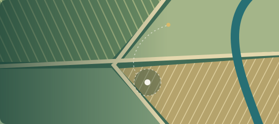

YOUR NEXT DECISION
Start with a reason to change
Before committing a field
These are your recorded checks, not independent verification.
Start with your current crops. Check water limits, first-year costs and the local facts that could rule out a switch.

Your field, in a wider context ↗ILLUSTRATION · OPEN THE ACTUAL MAPYOUR NEXT DECISION
These are your recorded checks, not independent verification.
URDU SPEECH → TEXT
Dictate a question or farming note in Urdu. Review and edit the transcript before using it. Speaking never changes crop or cost inputs automatically.
Local mode downloads public model/runtime files on first use; recordings are processed on this device, not uploaded for inference. Downloads are large and older phones may be slow. Browser mode may send audio to its provider.
Record up to 30 seconds, or choose an audio clip up to 45 seconds and 10 MB. Urdu transcription stays Urdu even when the interface is English.
Ready for Urdu dictation. No microphone starts until you press Record.
OpenAI Whisper multilingual weights via Xenova · Transformers.js · Model & license. Recognition can make mistakes; confirm names and numbers.
YOUR FIELD, YOUR REASONING
Explanations based on your current inputs. No prices, yields or advice are invented.
Microphone recognition depends on the browser and may send audio to its provider. It starts only when you press the button. Typing works without a microphone.
SCENARIO LAB
Hypothetical stress tests, not climate forecasts. Rankings update as you adjust.
YOUR WATER BUDGET, MADE VISIBLE
Shared scale in mm/year; displayed values are rounded. Effective rain and irrigation are model assumptions. Irrigation is capped at your entered availability; annual totals do not establish in-season sufficiency.
WHAT THIS OPTION MEANS FOR YOUR FARM
Compared with your current rotation under the same field and weather assumptions. Water-demand differences are not measured pumping savings; soil scores are management proxies.
ROTATION COMPARISON
| Rotation | Model score ⓘ | Demand / yr | Water gap | Soil proxy |
|---|
Select a rotation to compare its water demand and management trade-offs against your current practice. Scores are uncalibrated proxies, not expected yields.
WHAT YOU WOULD PLANT
Custom sequence: edit any season below. Seasonal suitability requires local review.
COULD THE SWITCH PAY FOR ITSELF?
A lower water requirement is only part of the decision. Enter your local variable pumping cost, the expected change in crop margin before irrigation costs, and the first-year cost of switching. No prices or yields are supplied by FieldShift.
Crop-margin change = alternative crop revenue minus its non-irrigation running costs, less the same margin for your current rotation. Include yield and buyer-price uncertainty in your own estimate. Pumping cost must be per m³ usable at the root zone; adjust for your irrigation losses.
Assumed annual irrigation application = min(available irrigation, max(0, crop demand − effective rain)). Comparing those two capped amounts avoids treating unmet water demand as water already pumped. The resulting volume difference × your variable pumping cost gives a hypothetical cost change. Add your crop-margin change and subtract your switching costs to screen the first year.
This is a scenario calculation, not a profit forecast. It does not predict yields, crop prices, fixed electricity charges, subsidies, financing costs, daily irrigation timing or actual water use. If your irrigation bill is fixed, a lower modelled water volume may produce no cash saving.
Approximate NASA grid cells · not field boundaries
DATA LINEAGE
NASA POWER regional data.
Preparing regional observations…
Imagery is a basemap only; its capture date varies. The dated overlays are NASA POWER MERRA-2 reanalysis, independent of the basemap.
| NASA cell center | Overlay value | Inspect |
|---|
SEASONAL SIGNALS
Precipitation in mm (left axis), temperature in °C (right axis). Select a month to inspect the readings.
READING THE SIGNALS
Revisit the water trade-offs, costs and local checks behind each choice.
THE SCIENCE, WITH THE FINE PRINT
NASA POWER supplies historical MERRA-2 reanalysis. It combines observations and modelling at coarse grid scale (roughly 0.5° × 0.625° for these meteorological fields). It cannot resolve individual farms.
Indicative annual crop water demand is the sum of four crop coefficients divided by two years. Effective rainfall uses an assumed fraction: sand 45%, loam 65%, clay 55%. Water gap = max(0, demand − effective rainfall − irrigation).
Soil support = 25 + organic matter × 8 + 10 per legume season + 15 × crop-family break fraction, capped at 100. Protection combines crop cover, residue retention and slope. Family breaks are a pest-cycle diversity proxy, not a pest forecast.
Balanced score weights: water 35%, soil 30%, protection 15%, diversity 20%. Water-first: 60/20/10/10; soil-first: 20/45/20/15. A simple monthly temperature threshold penalty lowers the score.
Limits: coefficients are illustrative and uncalibrated. No planting dates, yield, profit, nitrogen balances, irrigation losses or crop-specific pathogen modelling. Irrigation is assumed usable at the root zone. Wetness and NDVI are context, not scoring inputs.
Illustrative seasonal crop water demand (mm): rice 1,200; wheat 450; maize 650; chickpea 300; pearl millet 350; mustard 300; mung 350. Local variety and season can change these substantially. This is a relative planning experiment, not irrigation scheduling.
Next validation: local agronomist review, regional crop calendars and prices, multi-year hindcasting, SMAP and Landsat vegetation integration, and farmer trials. Crop portfolios currently target Punjab, Pakistan and must be adapted before use elsewhere.